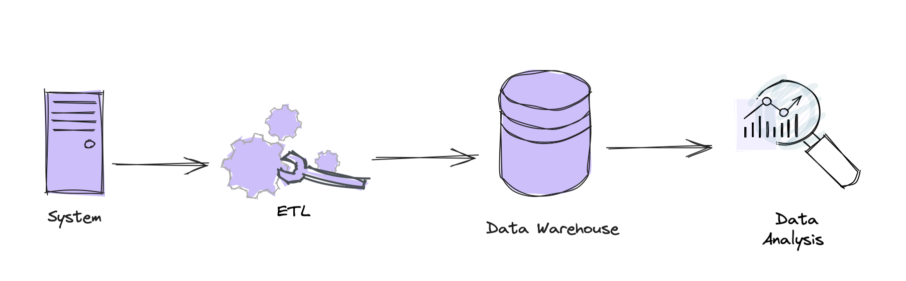
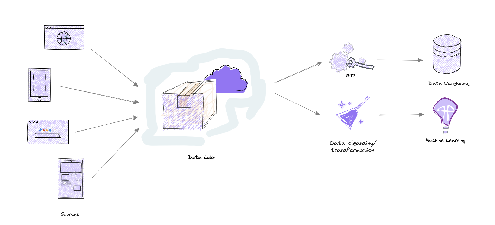

Introdução
Com a expansão da internet tivemos como resultado a proliferação de dados descentralizados nas redes, levando as empresas a lidar com volumes cada vez maiores de informações. Isso deu origem ao conceito de Big Data, onde a capacidade de analisar esses dados se torna valiosa para a tomada de decisões e inovação de produtos e negócios. No século XXI, os dados se tornaram a matéria-prima mais importante (quem nunca ouviu: “Os dados são o novo petróleo”) e as empresas que conseguem lidar com tamanha volumetria transformam esse mar de informações em valor para seus negócios.
No universo dos dados, profissionais se deparam constantemente com o dilema de escolher entre Data Warehouse, Data Lake e Lakehouse. Ambas as soluções têm seus méritos, mas compreendê-las profundamente é fundamental para tomar decisões informadas. Vamos mergulhar nesse tema, comparando, contrastando e destacando cenários em que uma pode ser mais vantajosa que a outra.

Data WareHouse
A Opção Clássica para Análise Estruturada
Data Warehouses são repositórios que armazenam dados estruturados de maneira organizada e consolidada. Eles são projetados especificamente para consulta e análise, oferecendo um alto desempenho nessas operações.
Os dados em um Data Warehouse são limpos, transformados e carregados de várias fontes, o que os torna altamente confiáveis para tomada de decisões baseadas em dados.
Vantagens:
Desempenho: São altamente otimizados para operações de leitura, proporcionando respostas rápidas para consultas complexas.
Integridade dos Dados: A estrutura rigorosa garante a consistência e precisão dos dados, o que é crucial para a análise.
Compatibilidade com BI: São amplamente compatíveis com ferramentas de Business Intelligence (BI), facilitando a geração de relatórios e dashboards.
Cenários de Uso:
Relatórios e Dashboards: Para empresas que precisam de relatórios regulares e análises complexas, os Data Warehouses oferecem um ambiente estável e confiável.
Histórico de Dados: Excelente para organizações que precisam manter um histórico detalhado de seus dados para análises retrospectivas e tendências ao longo do tempo.

Data Lake
Armazenamento em sua Forma Mais Pura
Data Lakes são vastos repositórios que armazenam grandes volumes de dados brutos em seu formato original. A principal vantagem de um Data Lake é sua flexibilidade.
Ele pode armazenar dados estruturados, semiestruturados e não estruturados, como textos, imagens e vídeos. Essa característica os torna incrivelmente adaptáveis e ideais para big data e analytics em tempo real.
Vantagens:
Flexibilidade: Não há necessidade de definir um esquema antes de armazenar os dados. Você pode guardar agora e definir a estrutura na hora de ler, o que é conhecido como schema-on-read.
Escalabilidade: Os Data Lakes são projetados para escalar facilmente, lidando com petabytes de dados sem esforço. Custo-efetividade: Geralmente são mais baratos para manter devido à utilização de storage de baixo custo.
Cenários de Uso:
Data Science e Machine Learning: A capacidade de armazenar e processar grandes volumes de dados variados é ideal para treinar modelos de machine learning.
Análise de Logs e Dados de IoT: A estrutura não padronizada dos Data Lakes é perfeita para armazenar logs de servidores e dados de sensores de IoT.

Lakehouse
O Melhor dos Dois Mundos
O Lakehouse procura resolver as limitações dos Data Lakes e Data Warehouses, oferecendo um armazenamento de dados que une a flexibilidade dos Data Lakes com a gestão e desempenho dos Data Warehouses.
Essa abordagem mantém os dados em um formato aberto e acessível, ao mesmo tempo em que aplica esquemas e regras de qualidade de dados, garantindo a confiabilidade necessária para análises críticas.
O Lakehouse se tornou um novo modelo de centralizar as fontes de dados e esforços de engenharia na organização. Essencialmente, o uso do Lakehouse permite que todos os usuários possam explorar os dados, independente de suas capacidades técnicas.
A ideia central do Lakehouse é ter um sistema de armazenamento de dados de baixo custo no data lake, utilizando um formato aberto de arquivos.
Estes formatos de arquivo são dados estruturados com esquema de dados pré-definidos armazenados com os dados. Assim como no Data Lake, o Lakehouse separa os recursos de processamento e armazenamento, ou seja, é possível que vários motores de processamento processem os mesmos dados sem ter que armazenar os dados de forma duplicada no Data Lake e no Data Warehouse.
Vantagens:
Governança de Dados: Incorpora recursos de gestão de dados, como esquemas, controle de versões e ACID transactions, diretamente no Data Lake.
Flexibilidade e Desempenho: Combina a capacidade de armazenar grandes volumes de dados diversos, típica dos Data Lakes, com o desempenho rápido e eficiente em consultas, característico dos Data Warehouses.
Compatibilidade com Ferramentas de BI e ML: Facilita a integração com ferramentas de análise de dados, Business Intelligence e machine learning, oferecendo uma plataforma unificada para todas as necessidades de dados.
Conclusão
Data Lakes, Data Warehouses e Lakehouse são componentes cruciais na estratégia de dados moderna. A escolha entre essas soluções depende de uma análise cuidadosa das necessidades atuais e futuras de armazenamento, gestão e análise de dados.
Fazer a escolha da solução certa de repositório sempre dependerá de como se deseja acessar os dados, levando em consideração a velocidade e a criticidade destes dados, além de outros fatores como escalabilidade e flexibilidade de solução.